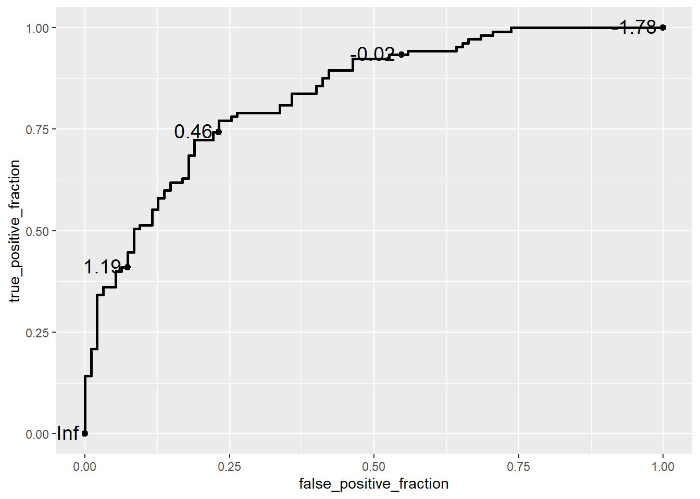
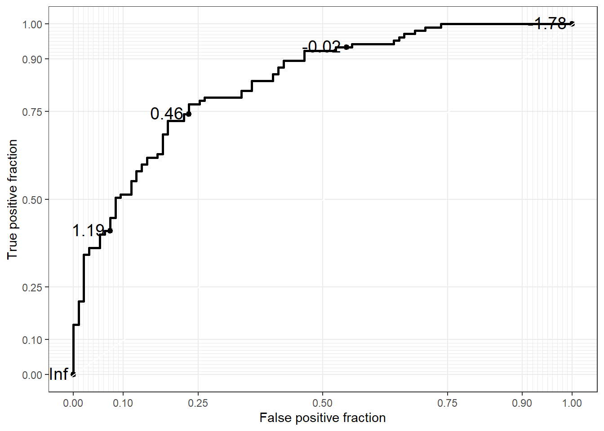
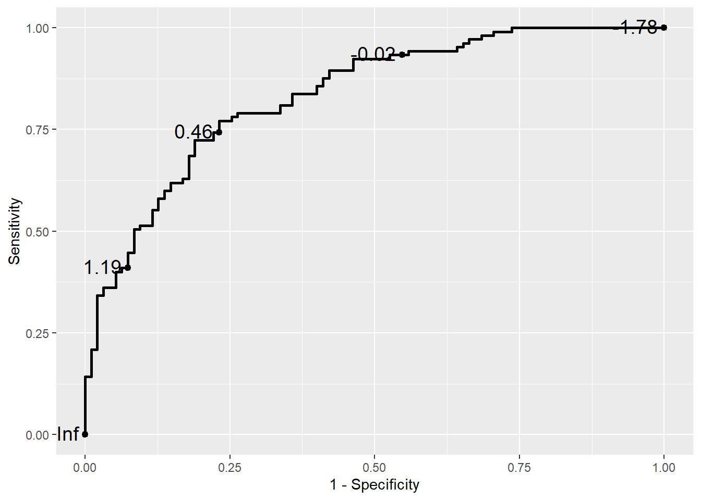

7 Epidemiological Measures
7.1 Intoduction
Epidemiology is broadly defined as the study of the occurrence and distribution of health-related states or events within specific populations, as well as the determinants influencing these states. A core goal of epidemiology is to apply this knowledge to prevent and control health issues, improving population well-being.
In previous chapters, we introduced foundational data analysis methods, including calculating the frequency and percentages of categorical variables and assessing the center and dispersion of numerical variables. These techniques provided insights into the overall structure of our data. However, epidemiology involves more targeted measures designed to quantify health-related events and explore relationships between these events and potential risk factors.
This chapter focuses on two essential aspects of epidemiological analysis: measures of disease occurrence and measures of association. Measures of disease occurrence help us quantify the frequency and burden of diseases within a population, while measures of association allow us to identify connections between potential risk factors and health outcomes. Together, these metrics form the foundation for understanding the distribution and determinants of health conditions and play a crucial role in guiding public health actions and informing clinical decision-making.
It’s important to note that epidemiology often emphasizes categorical outcomes, such as disease presence or absence (e.g., diabetes status), though numerical outcomes like blood sugar levels are also valuable. The tools and techniques presented in this chapter are tailored toward working with categorical data due to the frequent need to assess metrics like incidence, prevalence, and risk.
Throughout this chapter, we will introduce these epidemiological measures and demonstrate how to calculate them in R, providing a practical, hands-on approach to understanding the occurrence and association of health-related events within a population.
7.2 Measures of Disease Occurance
In epidemiology, understanding disease occurrence is fundamental to assessing health outcomes in populations. Three key measures—Risk, Incidence Rate, and Prevalence—offer distinct insights into the frequency and impact of health conditions within a group. Each measure is used based on specific research questions and population characteristics:
7.2.1 Risk (Incidence Proportion)
Risk, or incidence proportion, quantifies the probability that an initially disease-free individual will develop a disease over a specified time period. It is commonly used in studies with defined time frames and stable populations.
7.2.2 Incidence Rate
Incidence rate, often referred to as the person-time incidence rate, accounts for variations in follow-up time by measuring the rate at which new cases of a disease occur in a population per unit of person-time. This measure adjusts for dynamic populations where individuals may join or leave during the study.
7.2.3 Prevalence
Prevalence assesses the proportion of individuals within a population who have a specific disease at a particular point (point prevalence) or over a period (period prevalence). Unlike incidence, prevalence includes both new and pre-existing cases, offering a snapshot of the disease burden.
For a more in-depth discussion of these epidemiological measures, please refer to the recommended paper (KJ Jager et al., 2007) on understanding and applying disease occurrence metrics. This resource provides a thorough explanation of the definitions, and applications for each measure in various research contexts.
7.3 Measures of Disease Occurance using R
In epidemiology, understanding how frequently a disease occurs within a population is fundamental to assessing the burden of the disease, identifying risk factors, and implementing preventive measures. This session will cover the key measures used to quantify disease occurrence, using practical examples and R code to illustrate each concept. The focus will be on practical implementation, similar to the approach used in R for Epidemiology by Brad Cannell, ensuring that you can easily apply these techniques in real-world research settings.
Study Description
This study followed 10 participants over a period of 13 months, with monthly follow-up visits. The main goal was to track the progression of their health status, specifically looking at four possible states:
Pre-follow-up: Before the participant was at risk (baseline state).
At Risk: The participant was healthy but at risk of developing the disease.
Diseased: The participant had developed the disease during the follow-up period.
Deceased: The participant had passed away.
Here’s a description of each participant in the study:
1. Participant 1:
- Already had the disease before the study started.
Participant 2:
Healthy at the start.
At risk for 2 months, then developed the disease in the third month.
Passed away in the sixth month.
Participant 3:
Healthy at the start.
At risk for 4 months, then developed the disease in the fifth month.
Stayed diseased for the rest of the study period.
Participant 4:
Healthy at the start.
At risk for 5 months, then developed the disease in the sixth month.
Remained diseased until the end of the study.
Participant 5:
Healthy at the start.
At risk for 7 months, then developed the disease in the eighth month.
Stayed diseased for the rest of the study.
Participant 6:
Healthy at the start.
At risk for 8 months, then developed the disease in the ninth month.
Passed away shortly after in the eleventh month.
Participant 7:
Healthy at the start.
At risk for 9 months and never developed the disease.
Passed away in the tenth month.
Participant 8:
Healthy at the start.
At risk for 5 months and never developed the disease.
Passed away in the sixth month.
Participant 9:
Healthy at the start.
At risk for the entire study and never developed the disease or passed away.
Participant 10:
Similar to Participant 9:
Healthy at the start.
At risk for the entire study without developing the disease or passing away.
7.3.1 Calculating Incidence Proportion with R
The Incidence Proportion (also known as Risk or Cumulative Incidence) measures the proportion of individuals who develop a disease during a specified time period.
Applying this to Our Example
In your dataset:
We need to count the participants who developed the disease during the follow-up period.
We exclude participants who already had the disease before the follow-up (like Participant 1) because they were not initially at risk.
Step 1: Determine the Number of Participants at Risk
First, we identify participants who were classified as “At Risk” at the start of the study (month 0). We exclude individuals who were already diseased (e.g., Participant 1).
# Load necessary package
pacman::p_load(tidyverse)
# Find the number of participants at risk at the start of the study
pop_at_risk <- pop_10 |>
filter(month == 0 & status == "At Risk") |>
count(status) |>
pull(n)
pop_at_risk[1] 9There were 9 participants initially at risk, as we excluded the participant who was already diseased at the start of the study.
Step 2: Count the Number of New Cases of Disease
Next, we need to find out how many participants developed the disease during the follow-up period. We exclude the individual who was already diseased at the beginning.
# Exclude the participant who was already diseased at the start
inci_pop <- pop_10 |>
filter(person != 1)
# Count the number of new cases of disease
incidence_number <- inci_pop |>
select(person, status) |>
filter(status == "Diseased") |>
distinct() |>
count(status) |>
pull(n)
incidence_number[1] 5A total of 5 participants developed the disease during the follow-up period.
Step 3: Calculate the Incidence Proportion
incidence_number / pop_at_risk[1] 0.5555556The incidence proportion is 0.556, or 55.6%. This indicates that approximately 55.6% of the at-risk participants developed the disease during the follow-up period.
Step 4: Calculate the 95% Confidence Interval
To assess the precision of our estimate, we calculate a 95% confidence interval for the incidence proportion using the prop.test() function in R
prop_test <- (prop.test(incidence_number, pop_at_risk))
prop_test$conf.int[1] 0.2265292 0.8465694
attr(,"conf.level")
[1] 0.95The 95% confidence interval for the incidence proportion is (22.7%, 84.7%). This wide interval reflects the uncertainty due to the small sample size. It suggests that the true incidence proportion in the population could be as low as 22.7% or as high as 84.7%.
7.3.2 Calculating Incidence Rate with R
The Incidence Rate is another measure of disease occurrence that accounts for the varying amount of time each participant contributes to the study. Instead of simply dividing by the total number of at-risk participants, we use the person-time contributed by each individual as the denominator. This approach is particularly useful when participants have different follow-up times, such as when someone drops out of the study early.
Step 1: Calculating Person-Time
To calculate the incidence rate, we first need to determine the person-time contributed by each participant. Person-time is measured in person-months or person-years, depending on the study duration.
In our example, we need to:
Exclude participants who were already diseased at the start (e.g., Participant 1).
Exclude follow-up time after the study period (e.g., after month 12).
Count only the time when the participants were at risk (status = “At Risk”).
person_month <- pop_10 |>
filter(!(person == 1 | month %in% c(-1, 12))) |>
mutate(person_month = 1) |>
filter(status == "At Risk") |>
group_by(person) |>
summarise(person_month = sum(person_month))
person_month# A tibble: 9 × 2
person person_month
<int> <dbl>
1 2 2
2 3 4
3 4 5
4 5 7
5 6 8
6 7 9
7 8 5
8 9 12
9 10 12This table shows the total person-months contributed by each participant while they were at risk. For example, if a participant was at risk for 5 months, their contribution to the person-time would be 5 person-months.
Step 2: Calculate Total Person-Time
Next, we sum up the person-months across all participants to get the total person-time and convert it to person-years.
# Calculate total person-time in months and convert to years
total_person_months <- person_month |>
pull(person_month) |>
sum()
total_person_years <- total_person_months / 12
total_person_months[1] 64total_person_years[1] 5.333333The total follow-up time contributed by all participants is 64 person-months, which is equivalent to 5.33 person-years.
Step 3: Calculate the Incidence Rate
With the total person-time and the number of new cases (incidence number) from earlier steps, we can now calculate the incidence rate.
Incidence Rate per Month: This measures the rate of new cases per person-month of follow-up.
Incidence Rate per Year: This measures the rate of new cases per person-year of follow-up.
# Calculate incidence rates
incidence_per_month <- incidence_number / total_person_months
incidence_per_year <- incidence_number / total_person_years
# Calculate the incidence rate per 100 person-months
incidence_rate_100_person_months <- incidence_per_month * 100
incidence_per_month[1] 0.078125incidence_rate_100_person_months[1] 7.8125incidence_per_year[1] 0.9375Interpretation
The incidence rate per month is 0.078, meaning there are about 7.8 new cases per 100 person-months of follow-up.
The incidence rate per year is 0.938, indicating that there are about 0.94 new cases per person-year of follow-up.
We are not discussing how to calculate the confidence interval for the incidence rate in this section, as it requires a deeper understanding.
7.3.3 Calculating Prevalence with R
In this example, we conducted a cross-sectional study at the 3-month mark to determine the prevalence of the disease among the 10 participants. Prevalence measures the proportion of individuals in the population who have the disease at a specific point in time. It helps us understand how widespread the disease is within the study population.
Step 1: Filter Data for the Third Month
Using the R code below, we first filter the data to include only records from the third month.
# Load necessary packages
pacman::p_load(tidyverse)
# Filter data for the third month
month3 <- pop_10 |>
filter(month == 3)Step 2: Calculate Disease Prevalence
Next, we count the number of participants in each health status category and compute the prevalence of the disease.
# Count status categories and calculate prevalence
prevalence <- month3 |>
count(status) |>
mutate(prevalence = n / sum(n))
prevalence# A tibble: 2 × 3
status n prevalence
<chr> <int> <dbl>
1 At Risk 8 0.8
2 Diseased 2 0.2Interpretation: The table output shows the proportion of participants in each status category (e.g., “At Risk,” “Diseased,” “Deceased”) at the third month. The prevalence of the disease is the proportion of participants classified as “Diseased”.
For this example, the prevalence of the disease in the third month is 0.2 (or 20%), meaning that 2 out of the 10 participants were diseased at the time of the survey.
Step 3: Calculating the 95% Confidence Interval
Since the sample size is small (n = 10), we also want to calculate a 95% confidence interval for the estimated prevalence. This helps us understand the precision of our estimate. In R, we use the prop.test() function, which performs a test for proportions and provides the confidence interval.
# Calculate the 95% confidence interval for prevalence
prop_test <- prop.test(x = 2, n = 10)
prop_test$conf.int[1] 0.03542694 0.55781858
attr(,"conf.level")
[1] 0.95Interpretation of the Confidence Interval
The 95% confidence interval for the disease prevalence is (0.035, 0.558). This interval suggests that the true prevalence of the disease in the population lies somewhere between 3.5% and 55.8%. The interval is quite wide due to the small sample size, indicating a higher level of uncertainty in our estimate.
7.4 Odds: A Quick Overview
Odds is an important concept in epidemiology, commonly used in the calculation of measures like odds ratios to assess the strength of associations between exposures and disease, although it is not directly classified as a measure of disease occurrence.
Before we move on to discussing measures of association, it is essential to first understand the concept of odds, as it forms the foundation for some of the most commonly used statistical methods in epidemiological research, including the calculation of odds ratios and other association measures.
7.4.1 What is Odds?
In simple terms, odds expresses the likelihood of an event occurring relative to the likelihood of it not occurring. It is a ratio of the probability of the event happening to the probability of the event not happening. Mathematically, odds can be calculated as:
\[\text{Odds} = \frac{P(\text{event})}{1 - P(\text{event})}\]
In simple terms, odds is the ratio of the number of times an event happens to the number of times it does not happen.
Mathematically, this can be written as:
\[\text{Odds} = \frac{\text{Number of Events}}{\text{Number of Non-Events}}\]
For example, if 5 people develop a disease (event) and 95 people do not (non-event), the odds of the disease occurring are:
\[\text{Odds} = \frac{5}{95}\]
7.4.2 Prevalence Odds (Optional Reading)
Prevalence odds is used to describe the odds of having a disease at a particular point in time, typically in a cross-sectional study. It compares the odds of having the disease to the odds of not having it.
The formula for prevalence odds is:
\[\text{Prevalence Odds} = \frac{\text{Prevalence}}{\text{1 - Prevalence}}\]
In our earlier example
prevalence# A tibble: 2 × 3
status n prevalence
<chr> <int> <dbl>
1 At Risk 8 0.8
2 Diseased 2 0.2prevalence <- prevalence |>
filter(status == "Diseased") |>
pull(prevalence)Prevalence odds is
prevalence_odds <- 0.2 / (1 - 0.2)
prevalence_odds[1] 0.257.5 Measures of Association in Epidemiology using R
A fundamental task in epidemiology is to measure the strength of associations between risk factors—often termed exposures—and health outcomes. The term “exposure” broadly refers to any variable whose association with an outcome is under investigation. In practice, when studying these associations, we often compare conditions within a population of interest. For example, we might examine whether the prevalence of diabetes varies by state of residence. In this context, diabetes would be the outcome, while state of residence would serve as the exposure. Individuals experiencing the exposure are typically referred to as the exposed group, or simply the exposed. This framework helps clarify the roles of different variables as we seek to understand their relationship to health outcomes.
For a deeper understanding of measures of association, refer to this vignnete by Mark Stevenson, 2024.
7.5.1 Calculating measures of association using R
We are using epir package for this session.
# Install and Load epir package
pacman::p_load(epiR, tidyverse, here)Direct entry of 2 by 2 table contingency table cell frequencies
Firstly, a 2 × 2 table can be created by listing the contingency table cell frequencies in vector format. Take the following example.
The following table is the outcome of a cross sectional study.
| Outcome-Positive | Outcome-Negative | Total | |
|---|---|---|---|
| Exposed | 13 | 2163 | 2176 |
| Unexposed | 5 | 3349 | 3354 |
| Total | 18 | 5512 | 5530 |
We could create a 2 by 2 table for this data in R
dat <- c(13, 2163, 5, 3349)
# View the data in the usual 2 by 2 table format:
matrix(dat,
nrow = 2,
byrow = TRUE) [,1] [,2]
[1,] 13 2163
[2,] 5 3349To calculate the outcome prevalence ratio, odds ratio, attributable prevalence in the exposed, attributable fraction in the exposed, attributable prevalence in the population, and attributable fraction in the population, use the function epi.2by2. It’s important to note that we refer to these as the prevalence risk ratio and prevalence odds ratio, rather than the incidence risk ratio and incidence odds ratio, because we are working with data from a cross-sectional study, where disease frequency is measured as prevalence rather than incidence.
epi.2by2(dat = dat,
method = "cross.sectional",
units = 100,
conf.level = 0.95,
outcome = "as.columns") Outcome + Outcome - Total Prev risk *
Exposed + 13 2163 2176 0.60 (0.32 to 1.02)
Exposed - 5 3349 3354 0.15 (0.05 to 0.35)
Total 18 5512 5530 0.33 (0.19 to 0.51)
Point estimates and 95% CIs:
-------------------------------------------------------------------
Prev risk ratio 4.01 (1.43, 11.23)
Prev odds ratio 4.03 (1.43, 11.31)
Attrib prev in the exposed * 0.45 (0.10, 0.80)
Attrib fraction in the exposed (%) 75.05 (30.11, 91.09)
Attrib prev in the population * 0.18 (-0.02, 0.38)
Attrib fraction in the population (%) 54.20 (3.61, 78.24)
-------------------------------------------------------------------
Uncorrected chi2 test that OR = 1: chi2(1) = 8.177 Pr>chi2 = 0.004
Fisher exact test that OR = 1: Pr>chi2 = 0.006
Wald confidence limits
CI: confidence interval
* Outcomes per 100 population units The code provided uses the epi.2by2 function to calculate various measures of association and effect for cross-sectional data. Here’s a breakdown of each argument:
dat: This is the data input, which can be a vector of length four, a table, or a grouped data frame (from the dplyr package). It should contain the individual cell frequencies for the 2x2 table.method: Specifies the study design used for the data. In this case, “cross.sectional” indicates that the analysis is based on cross-sectional study data. Other options include “cohort.count”, “cohort.time”, and “case.control”, which would be used for cohort studies or case-control studies, respectively. The function will compute the appropriate measures of association and effect based on this specification.conf.level: This specifies the confidence level for the confidence intervals in the output. The value should be between 0 and 1, where 0.95 corresponds to a 95% confidence interval.units: This is a multiplier for the prevalence and incidence estimates (risk or rate). It is used to adjust the magnitude of the output estimates, typically for scaling purposes, like reporting in per 100 or per 1000 individuals.outcome: A character string that defines how the outcome variable is represented in the contingency table. The options are:- “
as.columns”: The outcome variable is placed in the columns of the table. - “
as.rows”: The outcome variable is placed in the rows of the table.
- “
Need a hand to get the correct wording to explain each of the listed measures of association and measures of effect? Set interpret = TRUE in epi.2by2:
epi.2by2(dat = dat,
method = "cross.sectional",
units = 100,
conf.level = 0.95,
outcome = "as.columns",
interpret = T) Outcome + Outcome - Total Prev risk *
Exposed + 13 2163 2176 0.60 (0.32 to 1.02)
Exposed - 5 3349 3354 0.15 (0.05 to 0.35)
Total 18 5512 5530 0.33 (0.19 to 0.51)
Point estimates and 95% CIs:
-------------------------------------------------------------------
Prev risk ratio 4.01 (1.43, 11.23)
Prev odds ratio 4.03 (1.43, 11.31)
Attrib prev in the exposed * 0.45 (0.10, 0.80)
Attrib fraction in the exposed (%) 75.05 (30.11, 91.09)
Attrib prev in the population * 0.18 (-0.02, 0.38)
Attrib fraction in the population (%) 54.20 (3.61, 78.24)
-------------------------------------------------------------------
Uncorrected chi2 test that OR = 1: chi2(1) = 8.177 Pr>chi2 = 0.004
Fisher exact test that OR = 1: Pr>chi2 = 0.006
Wald confidence limits
CI: confidence interval
* Outcomes per 100 population units
Measures of association strength:
The outcome prevalence risk among the exposed was 4.01 (95% CI 1.43 to 11.23) times the outcome prevalence among the unexposed: exposure increased outcome prevalence risk among the exposed.
The outcome prevalence odds among the exposed was 4.03 (95% CI 1.43 to 11.31) times the outcome prevalence odds among the unexposed: exposure increased outcome prevalence odds among the exposed.
Measures of effect in the exposed:
Exposure changed the outcome prevalence risk in the exposed by 0.45 (95% CI 0.1 to 0.8) per 100 population units. 75.2% of outcomes in the exposed were attributable to exposure (95% CI 25.7% to 93.1%).
Number needed to treat for benefit (NNTB) and harm (NNTH):
Exposure increased the outcome incidence risk in the exposed. The number needed to treat (i.e., expose) to increase the outcome frequency by one was 223 (95% CI 125 to 1008).
Measures of effect in the population:
Exposure changed the outcome prevalence risk in the population by 0.18 (95% CI -0.02 to 0.38) per 100 population units. 54.3% of outcomes in the population were attributable to exposure (95% CI 32.5% to 75%). Data frame with one row per observation
In epidemiological studies, particularly those investigating birth outcomes, it’s common to have data structured in a way that each row represents a unique observation. In the case of the low birth weight dataset, this structure would typically contain one row per individual (or birth), with variables representing various factors, such as birth weight, maternal characteristics, and other risk factors that could affect birth outcomes.
To find the measures of association from a dataset, we are using the low birth weight dataset as an example.
df <- read_csv(here("data", "low_birth_weight.csv"))creating 2 by 2 table
dat <- table(df$low, df$smoke)
dat
Non-Smoker Smoker
Low Birth Weight 29 30
Normal 86 44Here we can see that the outcome is in rows.
Now compute the odds ratio (we are assuming this is a cohort study) for smoking and delivery of a low birth weight baby:
epi.2by2(dat = dat,
method = "cohort.count",
conf.level = 0.95,
units = 100,
interpret = FALSE,
outcome = "as.rows") Exposed + Exposed - Total
Outcome + 29 30 59
Outcome - 86 44 130
Total 115 74 189
Point estimates and 95% CIs:
-------------------------------------------------------------------
Inc risk ratio 0.62 (0.41, 0.95)
Inc odds ratio 0.49 (0.26, 0.93)
Attrib risk in the exposed * -15.32 (-29.04, -1.61)
Attrib fraction in the exposed (%) -60.76 (-144.33, -5.78)
Attrib risk in the population * -9.32 (-22.31, 3.67)
Attrib fraction in the population (%) -29.87 (-59.98, -5.42)
-------------------------------------------------------------------
Uncorrected chi2 test that OR = 1: chi2(1) = 4.924 Pr>chi2 = 0.026
Fisher exact test that OR = 1: Pr>chi2 = 0.036
Wald confidence limits
CI: confidence interval
* Outcomes per 100 population units You could try interpret = TRUE to get the interpretation of these results.
7.6 Receiver Operating Characteristic (ROC) curve
Evaluating diagnostic tests is crucial in modern medicine for both confirming the presence of a disease and ruling it out in healthy individuals. For tests with a simple positive/negative result, measures like sensitivity and specificity are commonly used to assess accuracy. However, when test results are reported on an ordinal or continuous scale (e.g., from “definitely normal” to “definitely abnormal”), sensitivity and specificity vary across different thresholds. The ROC (Receiver Operating Characteristic) curve is a plot of sensitivity against 1-specificity across these thresholds, and the Area Under the Curve (AUC) provides a summary measure of the test’s accuracy. The ROC curve helps in identifying the optimal cutoff values and comparing different diagnostic tests. It is widely applied in clinical research, particularly for assessing biomarkers and imaging tests, and plays an important role in predicting adverse outcomes based on patient risk profiles.
For a foundational understanding of ROC curves, refer to the paper “Receiver Operating Characteristic (ROC) Curve Analysis for Medical Diagnostic Test Evaluation” by Hajian-Tilaki K, et al., 2013. This resource provides a comprehensive overview of the concepts involved.
7.6.1 ROC using R
In this session, we will demonstrate how to create ROC curves using the plotROC package in R. As a first step install and load plotROC and shiny package in R.
# Install and load necessary packages
pacman::p_load(plotROC, tidyverse, here, shiny)
df <- read_rds(here("data", "roc_demo_df.rds"))My First ROC Curve
We could follow the framework of ggplot using plotROC package. The demo dataset consists of four columns and represents data related to diagnostic testing, where different biomarkers are used to distinguish between diseased and healthy subjects. Below is a description of each variable:
disease_status_numeric: This variable is a numeric representation of the disease status. It contains binary values:
- 1: Represents subjects who are ill (diseased).
- 0: Represents subjects who are healthy.
disease_status_str: This variable is a string (character) representation of the disease status. It contains two categories:
- “Ill”: Indicates the subject is diseased.
- “Healthy”: Indicates the subject is not diseased.
biomarker: This variable indicates the type of biomarker being evaluated. It has two unique values:
- “biomarker1”: Refers to the first biomarker under analysis.
- “biomarker2”: Refers to the second biomarker under analysis.
value: This column contains the numeric measurements of the biomarkers for each subject. These values are continuous and reflect the level or concentration of the biomarker in the sample.
For creating ROC curve for the first biomarker, first filter out the data for biomarker1.
biomarker1 <- df |>
filter(biomarker == "biomarker1")Now create your first ROC curve
basicplot <- ggplot(data = biomarker1,
aes(d = disease_status_numeric,
m = value)) +
geom_roc()
basicplot
In this example, we use the ggplot() function from the ggplot2 package to define the plot’s aesthetics, and then add an ROC curve layer using the geom_roc() function from the plotROC package. The aes() function specifies the aesthetics for the ROC curve:
d: Represents the disease status of the subjects (in this case, disease_status_numeric), where 0 typically indicates healthy (disease-free) and 1 indicates ill (diseased).m: Represents the biomarker measurement (value), which serves as the marker for predicting disease status.
The geom_roc() function creates the ROC curve layer. It internally relies on stat_roc for the computation of the empirical ROC curve based on the provided disease status (d) and marker (m) values.
Note
If the disease status is not coded as 0 and 1, stat_roc will assume the lowest value represents the disease-free status, and a warning may be issued.
The disease status aesthetic can be specified as a string or factor, but with a warning.
ggplot(data = biomarker1,
aes(d = disease_status_str,
m = value)) +
geom_roc()Warning in verify_d(data$d): D not labeled 0/1, assuming Healthy = 0 and Ill =
1!The geom_roc layer includes the ROC curve line combined with points and labels to display the values of the biomarker at the different cutpoints. It accepts the argument n.cuts to define the number of cutpoints to display along the curve. Labels can be suppressed by using n.cuts = 0 or labels = FALSE. The size of the labels and the number of significant digits can be adjusted with labelsize and labelround, respectively.
ggplot(data = biomarker1,
aes(d = disease_status_numeric,
m = value)) +
geom_roc(n.cuts = 5,
labelsize = 5,
labelround = 2)
try style_roc as the next layer
ggplot(data = biomarker1,
aes(d = disease_status_numeric,
m = value)) +
geom_roc(n.cuts = 5,
labelsize = 5,
labelround = 2) +
style_roc()
If you want to change the X axis name, then
ggplot(data = biomarker1,
aes(d = disease_status_numeric,
m = value)) +
geom_roc(n.cuts = 5,
labelsize = 5,
labelround = 2) +
style_roc(xlab = "1 - Specificity")
Confidence regions and the Rocci Geom
It is common to compute confidence regions for points on the ROC curve using the Clopper and Pearson (1934) exact method. This is implemented in the stat_rocci and displayed as a geom_rocci layer.
basicplot +
geom_rocci()
Multiple ROC curves
When comparing multiple biomarkers within the same plot, we can use the color aesthetic within aes() to differentiate the ROC curves for each biomarker. This allows us to visualize and compare the diagnostic performance of multiple biomarkers simultaneously. In the example below, the color argument is set to the biomarker variable, so each ROC curve is colored according to the biomarker type:
ggplot(data = df,
aes(d = disease_status_numeric,
m = value,
color = biomarker)) +
geom_roc() +
style_roc()
7.6.1.1 **Area Under the Curve (AUC) tables
We could calculate AUC using the same package.
bybiomarker <- ggplot(data = df,
aes(d = disease_status_numeric,
m = value,
group = biomarker)) +
geom_roc() +
facet_wrap(~biomarker)
plotfunction (x, y, ...)
UseMethod("plot")
<bytecode: 0x000002cbf2851a78>
<environment: namespace:base>To find AUC
calc_auc(bybiomarker) PANEL biomarker group AUC
1 1 biomarker1 -1 0.833985
2 2 biomarker2 -1 0.679599To learn more about how to use the plotROC package effectively, I recommend exploring the package’s vignette. It provides a comprehensive guide on creating and customizing ROC plots in R, including advanced features like plotting multiple ROC curves, customizing aesthetics, and calculating AUC.